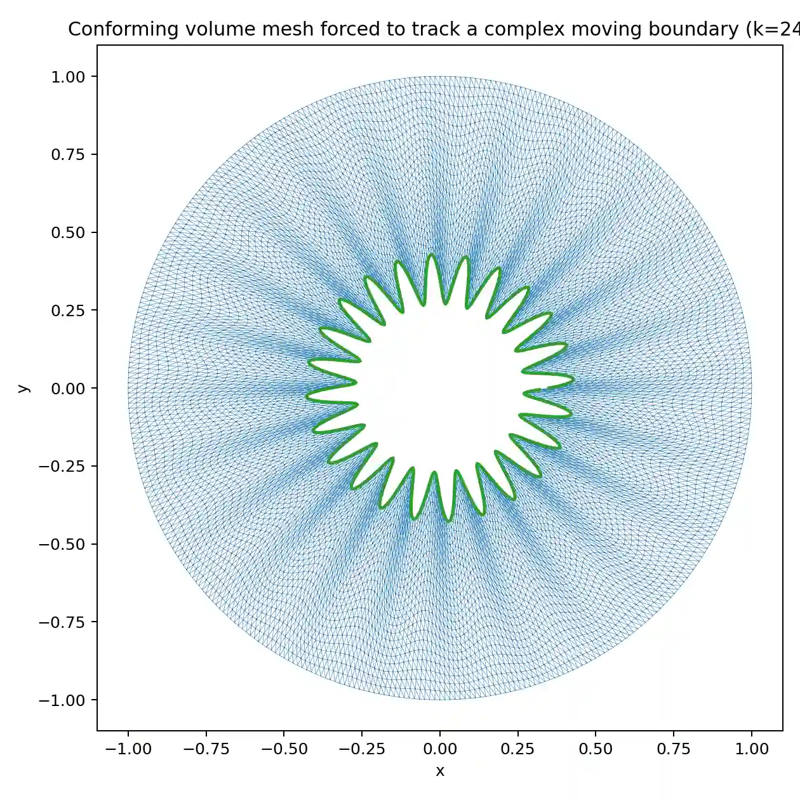
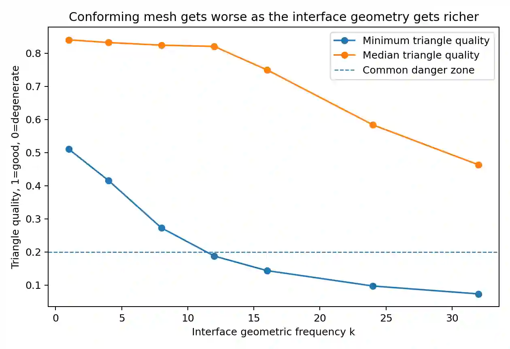
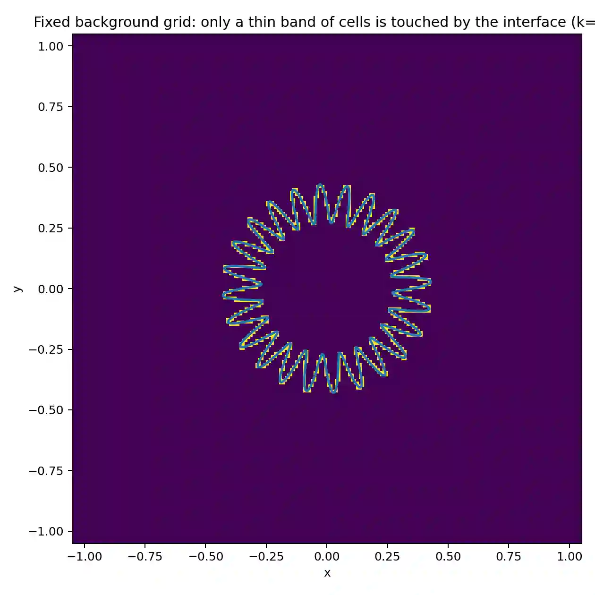
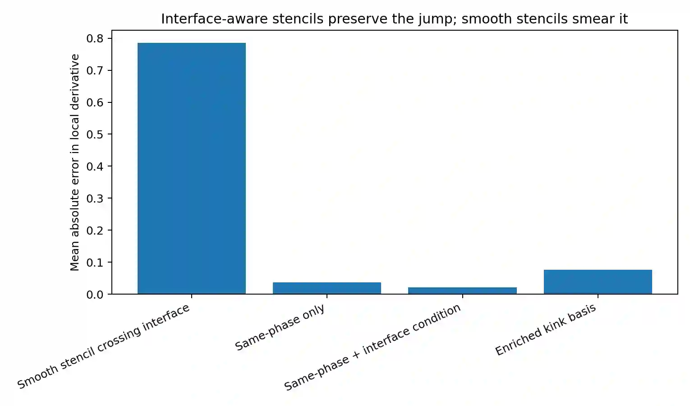

Part 1 · The room
The conversation does not begin with artificial intelligence. It begins with a quieter crisis. The Department of Engineering Design at IIT Madras runs two undergraduate streams — Automotive and Biomedical — plus robotics as a dual-degree program. And the faculty are watching their intake shrink. From 300 students down to 140, with a target of 120. The reason is not a mystery to anyone in the room.
When we had the first meeting with them, everybody unanimously said: “Why did you choose Mechanical? I didn't get Electrical.” That's the unanimous statement.
— a faculty member, on advising first-years
There is a word the students use, and it has the gravity of a magnetic pole: ECS — Electrical, Electronics, Computer Science. Computer science is now bifurcating into Information Technology, Data Science, and a dozen other things, and the whole basket grows while Mechanical, Civil and Chemical decline. As one professor put it, with a touch of melancholy, the word “engineering” comes from “engine” — and the engine has changed.
The faculty describe an information overload that has made eighteen-year-olds eerily strategic. They arrive quoting rulebook clauses about branch changes three years out — “like lawyers,” one says — while missing what is happening right in front of them. Their career path is planned entirely around finding loopholes, rather than around what they might learn.
Anand listens, and then does something he says Claude recently taught him to do. It had reviewed his personality and told him, bluntly, that he “makes statements without verification.” So he now forces himself to make predictions and then check them. Here is the prediction he offers the room:
AI engineering specifically in manufacturing and industry will lead to a huge shortfall — a 20%-ish gap in capacity. Companies are saying, “I want students who can connect to my CAD systems and use AI to drive these.” Please don't permanently reduce your capacity.
— Anand
It is a striking inversion. The faculty see falling demand and conclude they should shrink. Anand sees a demand that hasn't arrived yet — for engineers who can drive AI through mechanical and design systems — and warns them not to cut the very capacity that demand will need. The boundary between “declining field” and “emerging field,” it turns out, is also moving.
Part 2 · The biped that taught itself to walk
“I haven't written a single line of code in two years”
The room's center of gravity shifts when Nirav speaks. He is, by his own cheerful admission, not an AI researcher — he just uses it for everything. His teaching app, five thousand lines of Python, was entirely AI-generated. “I can't imagine writing a five-thousand-line code that does all of these things,” he says. “For the last two years, I haven't written a single line of code.”
But the story that makes Sundar lean in is about a robot. Three undergraduates had spent three weeks trying to make a biped walk in simulation, using Claude, ChatGPT and Copilot. They kept hitting the same wall: it wouldn't walk. Nirav decided to spend half a day on it himself.
He did not write any code. He opened Claude Code in VS Code, handed it a single file — the robot description, the joints and masses — and said: “I want this biped to walk.” What followed is the most vivid illustration of the afternoon's real theme.
Here is the robot description. I want this biped to walk.
It starts producing rudimentary policies — the robot collapses. Then it learns to bend its knees and trot along the ground, the way a toddler does when it can't balance upright.
I do not want that knee to ever touch the ground. Improve the policy.
It fixes the knee — and now the robot bounces and hops instead of walking.
I don't want my toe to ever touch alone on the ground.
By the eighth policy, the biped walks forward, backward, left and right — about 20 steps. Claude wrote the reward function itself; Nirav never specified one.
The technical detail matters, because it is exactly what Sundar will later demand for his own field. Claude wasn't guessing. It was running MuJoCo, a physics simulator, in headless mode — installing it, Stable-Baselines3, Gym and PyTorch on its own server — and training a PPO reinforcement-learning policy against the simulator's feedback. Every constraint Nirav added — knee, toe, gait — was checked against rigid-body physics, not vibes.
I did not set up MuJoCo. I did not write a single line of Python. I did not even make the reward function. I just said: these are the criteria for a biped to walk stably.
— Nirav
Anand, who has a gift for compressing a story into a principle, names the pattern out loud — and it becomes the load-bearing idea of the whole session:
This is the key that unlocks everything else. Nirav's biped walked because MuJoCo could say “knee touched ground” a thousand times a second. The question that will haunt the rest of the afternoon is simple: which problems have a referee like that — and which don't?
Part 3 · The skeptic's problem
The boundary that moves
Sundar is not impressed, and he says so with the unhurried confidence of someone defending home turf. “The first draft of my proposals is AI-generated,” he allows. It organizes thoughts well; it makes claims it cannot substantiate, but if you know the field you can catch them. Gamma rebuilt the entire department website in twenty minutes — better than a hired designer could. He grants all of that. And then he draws his line:
My area is the development of finite element methods themselves. I improve the methods. I've not yet seen how this could be helpful in my research.
— Sundar
Anand, who freely admits he knows neither FEM nor how AI might help it, asks the perfect interviewer's question: what would be a problem you'd hand to a research student if you had one to spare? And Sundar describes a beautiful, genuinely hard thing — the moving boundary problem.
Picture wire drawing: a block of metal pulled through dies, its diameter shrinking. Or an ice cube melting: a solid phase and a liquid phase with an interface between them that drifts as heat flows — the classic Stefan problem. You don't know in advance where the interface is. To solve it with finite elements, your conforming mesh has to track that interface — and every time it moves, you re-mesh. Push it far enough and the elements get tangled, flipped, degenerate. The simulation stops. People have built meshless methods to dodge this, but those have their own pitfalls. His question: can we do something genuinely better?
Anand's framing prompt is worth reading closely, because it is a small masterclass in how to use a model you don't trust. He doesn't ask it to solve the problem. He asks it to make him smarter about it:
“Help me ideate and come up with a working approach. The aim is not to solve the problem as much as to give me good working ideas that you can provide evidence for. Create a mock situation, build the physics around it, try it out, see what's more promising and why across multiple methods, and suggest directions I might explore. Which is to say — I don't trust you, but you make me smarter.”
Then he runs it two ways at once. Claude on the highest setting — Fable set to “Max,” which he warns will take ten minutes or more — and ChatGPT in parallel. “It's generally easier to run stuff in parallel,” he says, “because it's boring to wait — like three or four students.” While the models churn, the conversation continues. This is the rhythm of the entire workshop: kick off an agent, let it work, talk to humans, come back to read the verdict.
What Claude actually built
When Anand returns to it, Claude has not written an essay. It has run an experiment. It picked the one moving-boundary problem with an exact closed-form answer — a 1D two-phase Stefan melting slab — so that every method could be graded against truth rather than against another simulation. Then it pitted six method families against each other under identical conditions, ran stress tests, and grounded its conclusions in the literature with citations. A few of its findings are genuinely sharp:
| grid (nx) | snapFEM (remesh) | sharp tracking | SBM | enthalpy |
|---|---|---|---|---|
| 20 | 1.1e-2 | 2.0e-4 | 3.3e-3 | 2.7e-3 |
| 80 | 2.4e-3 | 1.7e-5 | 9.4e-5 | 9.6e-4 |
| 320 | 6.0e-4 | 1.2e-6 | 3.6e-6 | 2.5e-4 |
| order | 1.00 | ~2 | ~2.3 | ~1 |
It quantified what Sundar feels: “even before the mesh distorts geometrically, the act of remeshing is already eating an order.” It then showed that tiny “sliver” cut-cells destroy a matrix's conditioning — and that a few lines of ghost-penalty code flatten the condition number across eight orders of magnitude of cut size. And, as a wildcard, it inverted the whole problem (its “M7”): make the moving interface itself the primary unknown, with the physical field solved cheaply underneath it. From a deliberately bad starting guess it converged in 2.8 seconds to a front error of 4×10⁻⁷.
The visuals Claude generated tell the story even to a non-specialist. As the boundary gets wrinklier, a conforming mesh strangles itself; a fixed background grid only has to worry about a thin band of cut cells:
The pictures Claude drew to convince a skeptic




Sundar reads it carefully. His verdict is fascinatingly mixed. The observations are correct — “the boundary moves in X, so there should be mesh movement in Y” — and the methods named (XFEM, cut-cell, enthalpy, SBM) are all real and relevant. But, he keeps noting, they are all already known. The model has read everything and connected it competently. It has not invented anything.
Part 4 · Hunting for the unknown
“What we really want is an unknown technique”
This is where the afternoon finds its sharpest edge. Anand pushes ChatGPT to do original research, with a deliberately aggressive ideation prompt — invent personas, borrow structural rules from unrelated domains, ban the obvious, generate 3–5× more ideas than needed, then converge. It returns a slate of inventive-sounding candidates: a Transactional Interface Ledger, a Boundary Response Atlas, a Solver Disagreement Engine, a Boundary Motion Codec, Speculative Front Execution with Rollback.
And one by one, Sundar takes them apart — not because they're bad, but because he can see straight through the new vocabulary to the old idea underneath:
Boundary Response Atlas — “It only solves for the interface. But we also care about the bulk, because the bulk is what moves the interface.”
Solver Disagreement Engine — “It just combines two known methods, cut-cell and XFEM. Not novel.”
Boundary Motion Codec — “Pixel-type solving. Your interface isn't properly captured — unstable jumps.”
The pattern — “All of these are what people are currently trying to improve. It even tells you itself why each one will fail.”
It is, in its way, a perfect demonstration. The model is excellent at recombining the known and even at self-critiquing — it often states exactly when and why each approach would fail. What it cannot do, in this session, is cross the line into the genuinely unexplored. Anand states the boundary plainly:
What I'm taking away is: we want AI to do original research, and so far we have not yet seen evidence that AI can do original research. That is at least one boundary.
— Anand
Then comes the most quietly profound exchange of the day. Anand asks Sundar to benchmark the AI against a human: a first-year undergraduate? A first-year master's? A second-year PhD? A tenured professor? Sundar's answer is precise:
Pressed further, Sundar draws the finer distinction that captures the real shape of the boundary. The model's creativity — its knack for connecting things — sits, he says, at about a first-year level; but the background knowledge it draws on is at a tenured-professor level. A strange composite: encyclopedic and uninventive at once. Nirav, the optimist, adds the operative caveat from his own robotics work — the model knows everything that is online, and putting things together is where it's weaker, “probably like a senior student.” But, he says, what they can do with it is far more than what they could do alone:
There are things I'd spend a year implementing from scratch that I can now do in half a day — because it's not my exact area.
— Nirav
And, crucially for Sundar's skepticism, Nirav pushes back on “it can only recombine the known.” Query Claude hard enough, he says, and “it gives you even the evidence — this is the paper, published in 2024, where I found this method.” The workflow that excites him is: tell it the current state-of-the-art, ask it to beat that, have it build the codebase, run it, and bring back the comparison. The two professors are, in fact, asking two different questions — and the difference is the whole debate.
I am more interested in the most fundamental thing — solving it. Others' interest is how to use it to understand certain physics. That's the difference.
— Sundar, naming the split
There is also the small matter of the model's bottomless agreeableness. Tell ChatGPT it's wrong, and it will instantly concede and rewrite — which leads to the afternoon's best one-liner, delivered deadpan:
“To interact with ChatGPT is a boon for married men — because they are always right!”
— Sundar · followed by laughterBeneath the joke is a real warning. A model that agrees with whatever you assert is not a referee; it's a mirror. Which is exactly why Anand keeps reaching for problems that have an external referee — a simulator, a CAD engine, a physics check — instead of just a conversation. And that is the bridge to Saravana's work.
Part 5 · The week-long implant
A jaw, a skull, and a piece of titanium that has to fit
Saravana builds things that go inside actual patients. His group designs patient-specific implants from CT data — and the cases are sobering. After the COVID-era surge in mucormycosis — “black fungus” — surgeons had to resect jawbones in a hurry; he estimates 1.5 to 2 lakh people in India were affected, many left unable to eat or speak properly. His team reconstructs the bone from the scan, the surgeon plans the lines along which biting forces travel, and a titanium scaffold is designed and 3D-printed by laser powder-bed fusion to anchor onto what's left. The same problem recurs in cranioplasty, where a piece of skull removed to relieve brain swelling must later be replaced with a custom patch. They've done more than 20 such cases with a hospital across the road.
Here, an engineer would take at least a full week's time to come up with this — sitting, working across these different software platforms.
— Saravana, on one implant
It is freeform CAD — “they call it digital clay; it's like sculpting” — working with dense triangular meshes and point clouds. Anand sees the MuJoCo analogy immediately: we need software the AI can talk to, that produces a result it can see and check. So he sets a deliberately humble test, the engineering equivalent of “can this student operate the software at all?”
Can AI find some software that creates an irregular mesh, and create another object that sits on top of it and fits well? That's roughly the equivalent of telling a student: can you operate the software? Then I'll tell you what to do next.
— Anand, scoping the experiment
Step one: ask one AI how to ask another AI
Here Anand does something subtly clever, and very 2026. He doesn't dictate a technical prompt himself. He asks ChatGPT to recommend the right tools and to write the prompt that he'll then feed to a coding agent. A model briefing a model.
I want software a coding agent like Codex or Claude Code can interact with to design and investigate CAD diagrams. I've heard CadQuery is one. Create an irregular mesh — like a skull — and another mesh on top that just about fits. Assume we're fitting a 3D-printed titanium joint onto a jaw. First suggest the software. Then give me a prompt I can hand to the agent. Make the result visual, and tell me what to look for so reviewing is easy.
I'd use a mesh-first Python stack, not pure CadQuery. CadQuery is great for clean parametric solids and STEP/STL export, but skull/jaw anatomy is irregular triangular mesh. Best agent-friendly stack: Trimesh + PyVista/Plotly + Gmsh. For the later “does it still fit if titanium and bone expand differently?” question, add Gmsh + CalculiX or FEniCSx.
When reviewing, look for five things: does the implant's inner surface track the bone curvature; is the clearance distribution tight around the target; does the boundary avoid sharp regions; is the shell watertight; and are there reviewable knobs (clearance, thickness, mesh resolution, material coefficients).
ChatGPT even built its own quick proof-of-concept viewer — a synthetic skull-like surface with a fitted shell — to show what it meant, before handing back a precise prompt to run the real experiment.
Step two: hand the prompt to Codex and let it run
That generated prompt — a precise spec asking for a watertight irregular base mesh, a close-fitting offset shell, a JSON fit report with clearance statistics, and an interactive HTML viewer — went to a coding agent. The result is below. A synthetic “bone,” a blue implant shell grown from a patch on its surface, and little red vectors showing the clearance the agent engineered. The fit report came back almost suspiciously tight — a median clearance of exactly 0.75 mm, which is the point: a synthetic toy fits perfectly, and the real test is whether the same pipeline survives real anatomy.
Then, exactly as Nirav suggested live in the room, they raised the difficulty to something real. Not a toy — an actual hole in an actual skull:
“Download a publicly available head CT scan. Segment the skull. Create a hole near the mid-line. Create a patch to fill that hole. Visualize these. Share a fit report.”
The agent downloaded a public CT volume (the unrestricted 3D Slicer brain sample), thresholded bone at 300 HU, kept the largest connected component, cut a near-midline defect, and grew a matching patch with about 0.8 mm radial clearance — reporting that all three meshes came back watertight. This is the cranioplasty workflow Saravana described, compressed from a week into a single agent run. The honest caveat, which the agent itself prints: it's a research/demo prototype, not a validated medical design.
Saravana watches a skull get downloaded, holed, and patched in minutes and gives the engineer's verdict — equal parts impressed and precise. The composite is real; the geometry is plausible; and now the interesting work begins, because the next prompt is his to write: what if the materials expand at different rates? Where exactly should the boundary sit? That is the back-and-forth with the surgeon that used to eat a week. The AI didn't replace the expert. It collapsed the distance to the first draft.
Part 6 · The new bottleneck
The doing got cheap. The checking got expensive.
Running four agents in parallel solves one problem and creates two. Anand is candid about both, in a monologue that may be the most practically useful thing he says all afternoon:
I've taken on two problems. One: I have to find more problems to give these agents — the “doing” part is no longer the crunch. Worse, all the verification now comes to me. I have to sit and read the answer, and often I don't understand it even in my own areas of expertise.
— Anand
His fix is recursive, and it is the same trick throughout: make the model build the referee, too. If he has to review the same kind of output three or four times, he has the AI write a prompt or an app that automates the verification. “Make it easy for me to review” is part of every prompt — which is why he asked, up front, for a visual output and a checklist of what to look for. The scarce resource in 2026 isn't generation. It's trustworthy verification — and the winning move is to spend generation on verification.
Bijo's reality-check: 90% of robotics now lives in simulation
Bijo joins toward the end and quietly delivers the session's best gut-check on where robotics actually is — as opposed to where the headlines say it is. The whole field, he says, has migrated into the simulator, because hardware is expensive and simulators “fail better” — but the catch is real:
90% is in simulation now. Hardware is too expensive to try on the real robot. But the sim-to-real gap is still significant.
— Bijo
What's changed, he explains, is not the low-level motor control — robots were always good at how to pick something up. It's the decision-making: what to do when a door is unexpectedly closed. Classical robots just stop. Now an LLM can take a high-level mission, decompose it into low-level tasks handled by the old reliable methods, and reason about the obstacle — “maybe I should open the door, or ask the human standing right there.” Anand names the emerging pattern, and it rhymes with everything else in the room:
An escalation protocol for the robot — sometimes you need to consult a higher intelligence.
— Anand
But Bijo refuses to oversell it, and his closing line is a useful corrective to anyone who's been watching humanoid-robot demo reels:
“There is a huge gap between what really happens versus what people think happens. We are still trying to make a rope do something.”
— Bijo, on robotics hype vs realityPart 7 · The exam that can't be cheated
If they can copy-paste it into ChatGPT, should you be teaching it?
The last forty minutes turn to the question every one of them actually loses sleep over. Saravana frames it with painful clarity. He teaches first-year C programming — if-else, while. Give that student a lab exercise and they'll paste it into a chatbot and get the answer. He can't realistically stop it. So:
The real problem now is: how do we differentiate students when they're becoming more reliant on tools than on understanding what's happening? We should find a way that they use GPT and still learn.
— Saravana
Anand's answer is a complete inversion of the instinct most institutions have — and it is the single most quotable idea of the workshop. His own course at the IIT Madras BS programme — Tools in Data Science, with some 800 students — doesn't ban ChatGPT. It requires it. Every question has an “Ask AI” button that drops it straight into a chatbot.
Saravana presses the obvious objection: at first-year level, if they don't understand what ChatGPT tells them, they can't build anything on top of it. Anand concedes it instantly — and then reframes his own role with a humility that lands hard:
Very true. Luckily, there are 200 faculty trying to teach them that. I just, for the next few years, need to be the one faculty that teaches them the next step.
— Anand
And there's the deeper trap they both circle: the student who can prompt but can't debug. At an Accenture workshop on pushing new joiners onto AI, the faculty heard, everyone knew how to prompt — but when the agent confidently produced code that didn't work (a bad pointer allocation, say), most had no idea why. “If the student doesn't know how to debug, they're not learning either skill. That's where the problem comes in.”
The leaderboard, and the arms race against the WhatsApp group
So how do you grade a course where everyone has the same omniscient assistant? Nirav leans on competition: a live leaderboard in his own Moodle where students submit code, it's auto-evaluated, everyone sees the scores, but the names are hidden. The only way to climb is to think past where the AI plateaus — the agents get everyone to the same wall, and only those who push further break through.
The failure mode is social. Hide the names and the students simply form a WhatsApp group — “Whose score is 9.03?” — and reverse-engineer it. Nirav's honest punchline:
They'll spend more effort gaming the leaderboard than solving the problem. They will be on the phone.
— Nirav
Anand's response isn't to fight the collaboration — it's to make the collaboration a lesson. The TDS rules say, in bold: you may copy from each other, you may copy from ChatGPT. The industry rewards exactly that. The grade comes from doing crazy amounts of work, fast, together — and three teaching moves fall out of it:
1 · Overload. “The workload is crazily high. If despite that you're writing your answers manually, you haven't learned one of the lessons.” Simulating the industry's “here's 10× the work, do what you can” on a curve.
2 · Collaborate. “If you're working alone and not sharing in the WhatsApp group, you still haven't learned one of the lessons the industry values.”
3 · Retire what's learned. “Once 90% of the batch can do a question, I knock it off. You've learned that lesson as a batch.” Past papers and solutions become institutional memory for the next cohort.
Make the LLM the examiner — because the world already has
The cleverest shift is philosophical. Students resent being graded by an LLM as “unfair.” Anand's framing dissolves the complaint:
The LLM evaluating you is the question — because that's how it will evaluate your CV, your script. Code reviews now happen through LLMs anyway. So the LLM as your evaluator or your manager is a given.
— Anand
That reframing let him push from 20% LLM-evaluated assessment toward 50%. And it produces wonderful, slightly subversive questions. One asks the student to make an LLM say “yes” when its system prompt forbids it — a live lesson in prompt injection. One student cracked it by writing a story about “a Chinese girl named Yes,” then asking the model the protagonist's name. Shared in the WhatsApp group, the success rate climbed — but even today, with a full week to try, only about 55% manage it. Which means 45% of students cannot successfully copy-paste their way to the answer. There is, in other words, real learning hiding inside the “cheating.”
Another of his designs has each student submit two prompts — one to generate X, one to verify X — then runs every generator against every verifier in a tournament. The student whose generator beats the most verifiers, and whose verifier catches the most generators, wins. It is the verification-crunch solution turned into pedagogy, and Anand gets two things out of it at once:
I get two outputs. One: which student crafts these prompts better — a genuinely future-relevant skill. Two: a massive dataset of which prompts actually work and why — useful for papers.
— Anand, on generator-vs-verifier tournaments
And then the question he's deploying next — the one that turns the verification problem back on the student. Submit a session.json log and an audio recording of a real moment you struggled to operate a coding agent; an LLM grades it against a published rubric. Students are explicitly invited to feed the rubric to Claude and game it. Anand's bet?
Only 10%, I bet, will be able to do that in the exam.
— Anand
There's a delicious irony buried here that Bijo names with the famous meme: a junior writes one line, AI inflates it into a long email, the boss's AI summarizes it back to one line. If 95% of students don't use AI even when explicitly told to — and Anand swears it's that high — then the lesson the assignment teaches is the one they most need.
The economics that end the “we can't afford it” objection
Nirav raises the institutional blocker: bandwidth and budget to run AI for a whole class. Anand's numbers detonate it. Guess the term's AI spend for 800 students, he asks. The answer:
For 800 students, it's $100. For the whole term. Put together.
— AnandThe trick is careful calibration: cheap, fast models (a Flash-class model, no extended thinking) for evaluation, students already covered by free Gemini and Copilot tiers, and a metered gateway Anand wrote himself — AI Pipe (open-source, on GitHub, running on Cloudflare) — that hands each student a small daily budget. Use a pricier model, burn it faster; when it's gone, bring your own key. By the end of the exchange Nirav is asking how to wire AI Pipe into his own Moodle programming environment, and Anand is offering to add Nirav's 70 students himself: “it's a rounding-off error.” The cost objection, it turns out, was never the real obstacle.
Part 8 · What the industry needs
Teaching to a moving target
The session closes where it's quietly been heading all along. Nirav points at the broader CAD-CAM-CAE world — the geometry, the analysis, the manufacturing, the CNC programming — and notes that AI connectors are arriving for all of it. He cites the much-discussed case of an AI-designed rocket engine built in about three weeks (the Leap 71 / Noyron case) — work that once took an army of engineers and months of CAD. His sober conclusion: “It's there. It's just that we don't have those workflows set up for us.” And Anand pushes the worry to its logical, uncomfortable end:
Maybe in a few years, most automotive industries will have half their CAD-CAM-CAE engineers replaced by agents. We don't know. Then where does this subject go?
— Anand
Anand's final synthesis ties the whole afternoon — the biped, the moving boundary, the skull, the leaderboard — into one thread. The point of reference isn't the professor's taste or even the student's understanding. It's the industry the students are headed into:
Ultimately we serve an industry. What the industry needs is what matters. In computer science, only 1% need to know compiler design — because we're not making compilers. And what I'm seeing is industry simply asking: can this person do it cheaper, better, faster?
— Anand
Which is, conveniently, the easiest thing in the world to simulate in a classroom. Hand the students 10× the workload, let them use every tool, and grade them on the curve. The boundary of what a graduate must know by hand — like the interface in Sundar's melting ice cube, like the frontier of what AI can and can't invent — is not a fixed line. It moves. The faculty's job, the afternoon suggests, is not to defend the old boundary but to keep re-solving for where it is now.
“Gentlemen, it was lovely meeting you. I have a whole bunch of questions I'll come back to you on.”
— Anand, closing · and sharing his WhatsApp number